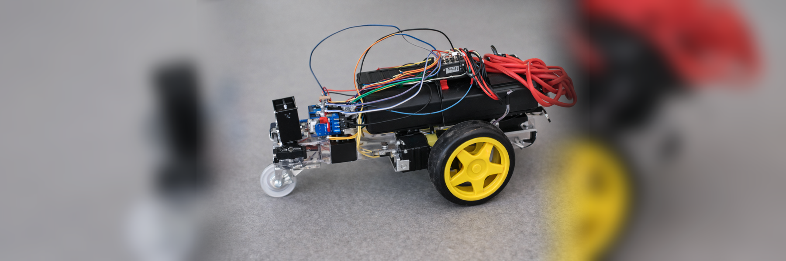

Project
Design and build a mobile vehicle wirelessly controlled via Bluetooth and Wi-Fi, capable of being operated from an application and from a web page.
A mobile carriage was developed using an ESP-32 board as the main control system. Electric motors, power electronics, and a wireless communication system were integrated. The robot was programmed to receive commands from an app via Bluetooth and also from a web interface via Wi-Fi. Connectivity, motion control, and system response tests were performed.
Construction of the carriage to be used, assembly of the electronic system, programming of the wireless control, and functional testing of the system.
It was possible to control the carriage's movement through two independent communication methods, demonstrating stable operation in performance tests.